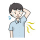

Hyperhidrosis
Rx
1.Solution Aluminum chloride 20% N=1
2.Tab Oxybutynin 5mg N=30 1/2 tab q12h
+ Tab propranolol 10mg N=30 q12h
نکته: ابتدا بررسی های لازم جهت تشخیص و رفع عامل زمینه ای انجام دهید
نکته: محلول آلومینیوم کلراید شبها قبل خواب به دست بمالد و سپس صبح بشورد و به مدت ۷ شب تکرار کند و بعد از آن دفعات رو به تدریج کاهش دهد. و بعد از بهبودی هفتهای یکبار کفایت میکند.
نکته: درمواردی که بیمار استرس دارد پروپرانولول تجویز کنید.
نکته: تزریق بوتاکس موضعی در جهت کاهش تعریق موضعی موثر است
1️⃣ بیماری های داخلی
✔️ تیروتوکسیکوز
✔️ دیابت DM
✔️ هایپو گلایسمی
✔️ نقرس
✔️ فئوکروموسایتوما
✔️ یائسگی
✔️ بدخیمی ها
2️⃣ بیماری قلبی مثل CHF
3️⃣بیماری نوروپاتیک
✔️ نوروپاتی محیطی
✔️ آسیب طناب نخاعی
✔️ پارکینسون
✔️ CVA
4️⃣ بیماری روانپزشکی : اظطراب و...
5️⃣بیماری عفونی
✔️ بیماری های تب دار
✔️ مالاریا
✔️ TB
✔️ بروسلا
6️⃣ مصرف دارو ها ( مثل TCA , ایندرال و...)
7️⃣ مصرف مواد مخدر ( کوکایین ، هرویین و...)
8️⃣ الکلیسم مزمن